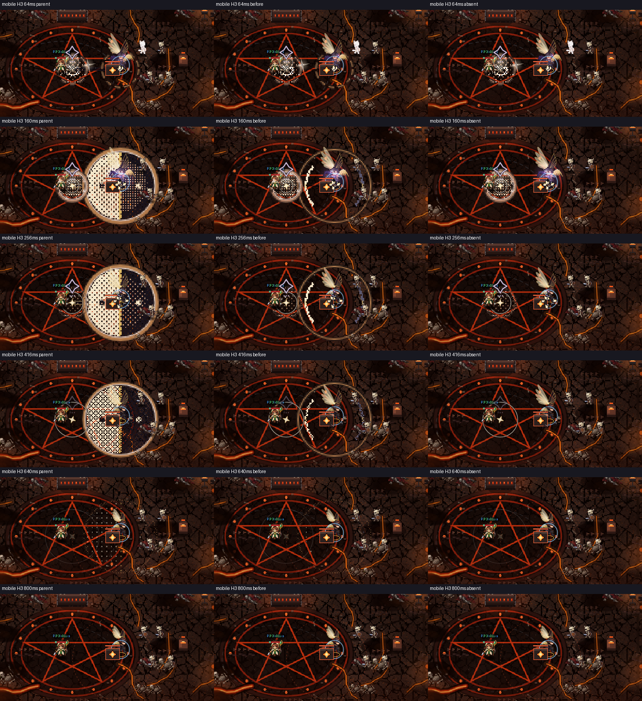
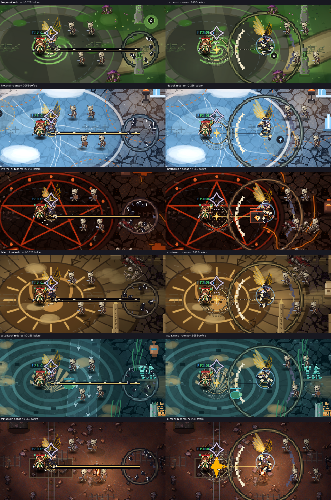

NanoGM H1/H3 — EN_CORRECCION
Evidencia nativa y composición. No aprobación ni instalación.
ng_decree-atlas.png
ng_burst_d-atlas.png
ng_verdict-atlas.png
ng_law-atlas.png
review-temporal-mobile-h2.webp

review-desktop-skin.webp
